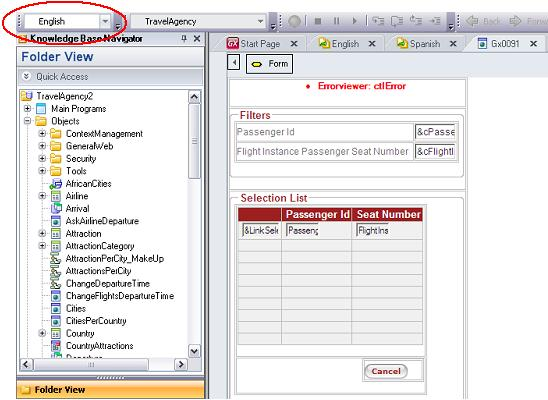
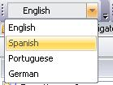
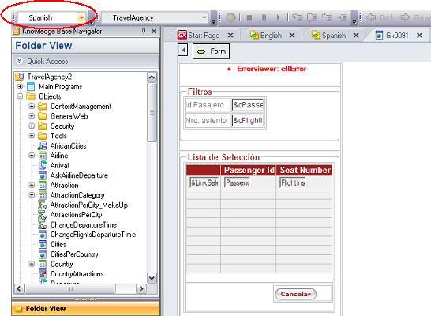

This combo box is useful for checking, for example, that texts in a web form are correctly laid out after each language switch (if columns, rows, titles, etc. fit in). We have three active languages in our Knowledge Base, and at any time we may want to see how texts are laid out in our web forms. A view of the web form with English selected:  Now, we choose Spanish...  ...and that's it! 
|